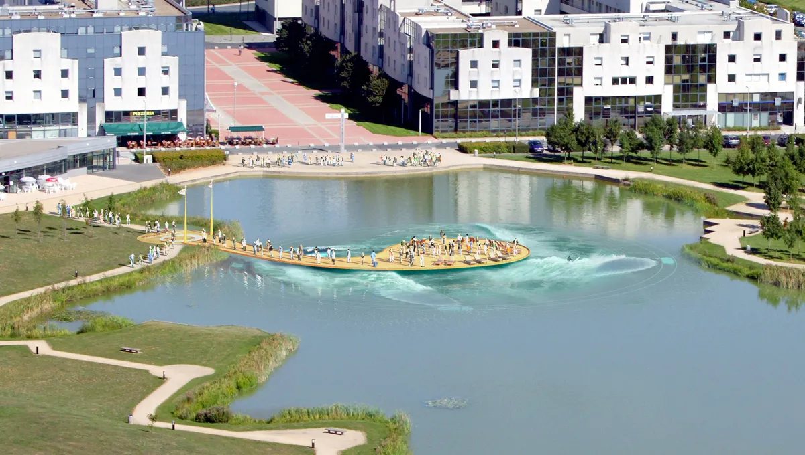

🏥 Projet Rendez-vous-86
Automatisation intelligente de la prise de rendez-vous médicaux pour l’Association des Cabinets Médicaux de la Vienne
🔍 Présentation généraleEn réponse à une problématique bien réelle de saturation des lignes téléphoniques dans les structures médicales, le projet Rendez-vous-86 vise à révolutionner la gestion des consultations grâce à une plateforme numérique intuitive, sécurisée.
Ce projet fictif, mais rigoureusement conçu, incarne ma vision complète d’un projet de transformation numérique : de la définition des besoins à la mise en production, en passant par la maîtrise des risques, du budget et de la qualité logicielle.
Les liens

-
✅ Rédaction de proposition
- Analyse des besoins client
- Conception d’une solution technique adaptée
- Estimation des coûts et des délais
- Rédaction claire et persuasive
- Construction d’un devis structuré
-
✅ Charte de projet
- Définition des objectifs, périmètre et livrables
- Planification par phases et jalons
- Organisation des équipes et rôles (RACI)
- Identification des risques et plans d’actions
-Intégration des contraintes RGPD et cybersécurité